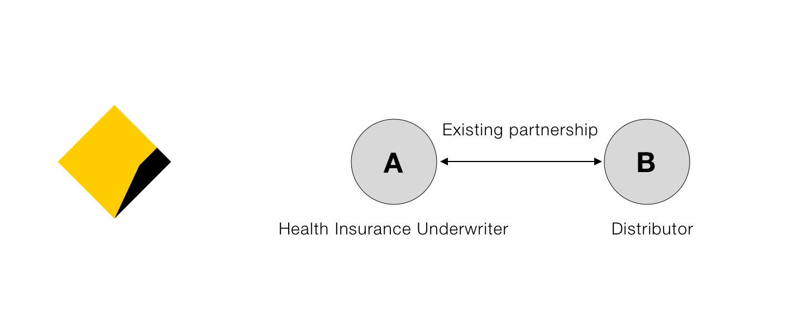
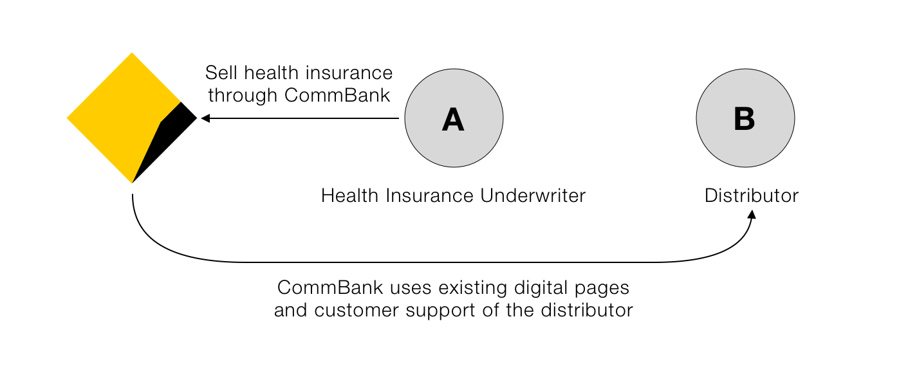
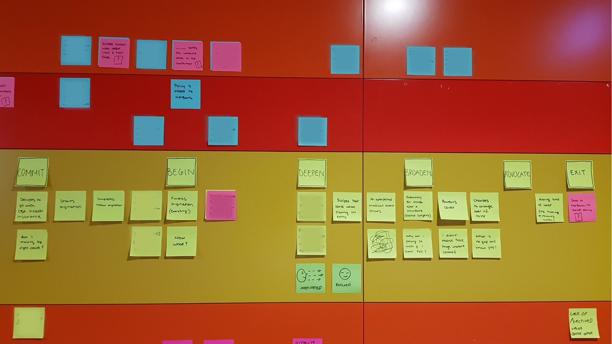

Context
CommBank intended to introduce a new health insurance product partnering with two other institutions. I was tasked to design a quick to market design solution.
Project Problems
My responsibility was to provide UX prototypes for the digital experience, but in research a few issues were identified that needed to be addressed:
- Budget constraints limited scope for development. There'd be multiple handovers between institutions and an inconsistent customer experience
- The partnership model lacked clarity around co-branding and would result in mixed messaging to customers
- The end-to-end customer experience was not considered in the quick to market solution
Phase 1 Solution
This was the solution that the business favoured in hopes of kick-starting sales:
Customer Problems Uncovered
Complexity and Confusion
Historically, health insurance (like most insurance) has been opaque, difficult to understand and complex. The rise of digital only players in the insurance space overseas demonstrates the attractiveness of insurance offerings that solve for complexity, value transparencuy and are digital first. CommBank's proposed product and distribution model would not meet any of these standards.
Unclear branding
A lack of clarity about the insurance provider would present customers with these kinds of questions:
- Who am I actually buying insurance from? CommBank, A or B?
- Which company do I call or contact when I have an issue?
- How do I manage claims that I have to make online for my extras?
Like most insurance, health insurance provides piece of mind in part through the reputation and guarantee of a reputable brand. The unclear branding would negate that intangible value.
Lack of value
One of CommBank's strengths is the concept of "everything in one place"; that a customer can manage all their products on digital through one account. It was unclear in budgets whether we could achieve this in the time frame required.
What I did
Given the amount of issues and what would likely be a poor product offering and customer experience, I went beyond my scope of work to:
- Map out a customer journey of a health insurance customer based on some research and annecdotes
- Design the service layer to illustrate how the customer would interact with each company at different touchpoints
- Designed a screen flow diagram to help stakeholders visualise the potential customer problems

Results & Next Steps
I presented the customer journey to senior stakeholders and there was agreement on pausing the project. The focus shifted back to the business to clarify the issues presented. This was an ideal outcome because:
- Launching a product with a poor customer experience was not going to deliver on business outcomes
- My stakeholders were able to use my designs to advocate for further planning
- Further work has been prioritised for after the business achieves clarity on branding and experience consistency